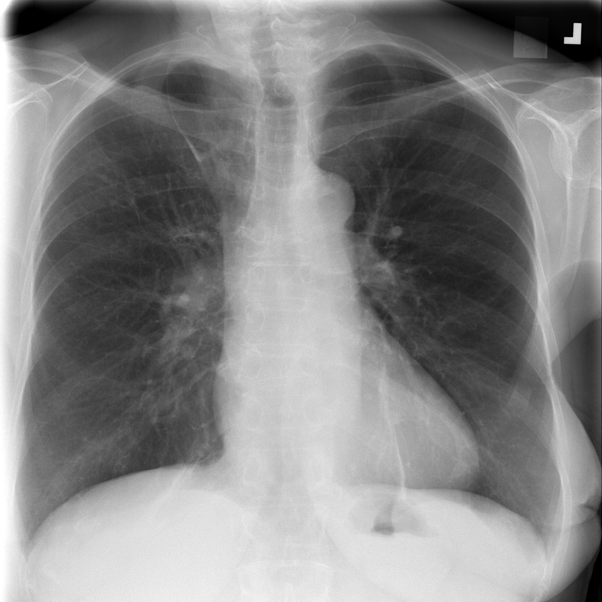
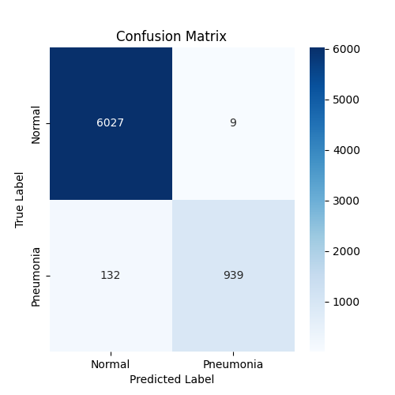

Pneumonia Detection
Neural Network

Overview
- This project applies deep learning to detect pneumonia from chest X-ray images using fine-tuned ResNet50, DenseNet121, and a custom CNN model trained from scratch. The goal was to compare transfer learning vs. training a CNN from scratch and identify the best model for clinical deployment.
Through extensive experiments, ResNet50 emerged as the best-performing model, achieving high precision and the lowest false alarm rate, making it ideal for real-world medical applications.
Dataset
Sources
- NIH Chest X-ray Dataset (2017)
- Stanford PNA Dataset (2019)
Training Size
- 38,029 normal images
- 6,750 pneumonia images
Classes
Preprocessing
- Resizing to 224x224 pixels
- Pixel values scaled to [0,1]
- Data Augmentation: rotation, shift, zoom, horizontal flip
Model Selection & Training
ResNet50
- A deep model with skip connections for better accuracy.
DenseNet121
- Feature reuse for better performance.
Custom CNN
- Built from scratch as a baseline.
Fine-Tuning Strategy
- Unfroze last 20 and 50 layers ResNet50 and DenseNet121 for fine-tuning.
- Adjusted learning rate (1e-5) to retain pre-trained ImageNet knowledge.
- Used Early Stopping & LR Reduction to prevent over-fitting.
Model Performance Comparison
| Metric |
Fine-Tuned ResNet50 |
Fine-Tuned DenseNet121 |
Baseline CNN |
| Precision (PPV) |
99.05% |
79.26% |
79.11% |
| Sensitivity |
87.68% |
92.25% |
90.85% |
| Specificity |
99.85% |
95.74% |
95.74% |
| F1 Score |
92.87% |
85.02% |
84.57% |
Key Takeaways
- ResNet50 has the highest Precision (99.05%) → Best at minimizing false alarms.
- DenseNet121 has the highest Sensitivity (92.25%) → Best at detecting pneumonia cases.
- Baseline CNN performed decently but did not outperform transfer learning models.
Final Model: ResNet50 Confusion Matrix

Conclusion
- This project demonstrates how deep learning can assist in pneumonia detection from chest X-rays. Through fine-tuning and decision threshold adjustments, I built a clinically relevant model with high accuracy and reliability. The final ResNet50 model balances Sensitivity and Precision, making it ideal for real-world deployment in medical imaging.